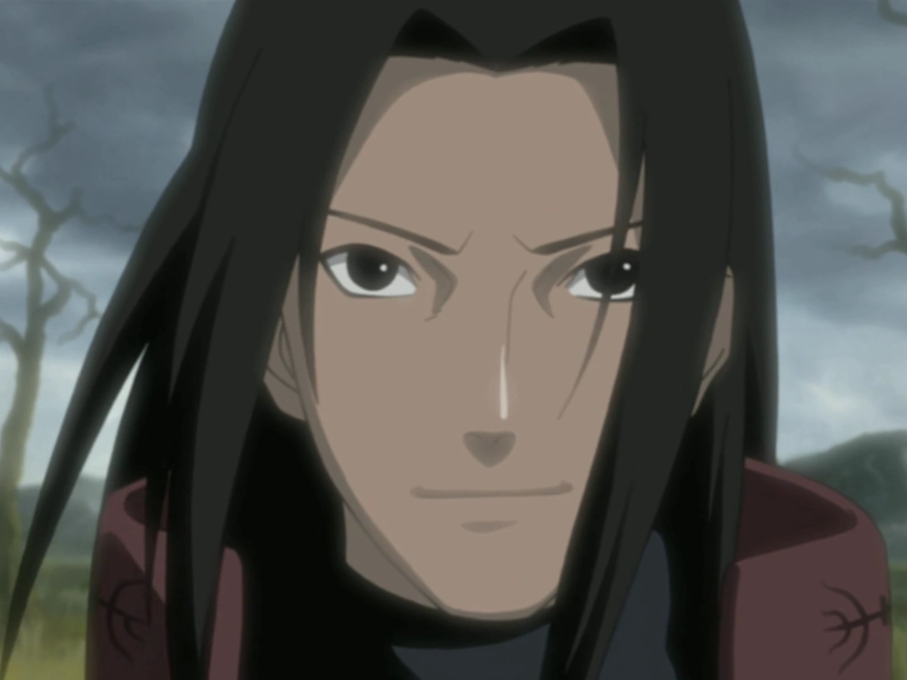
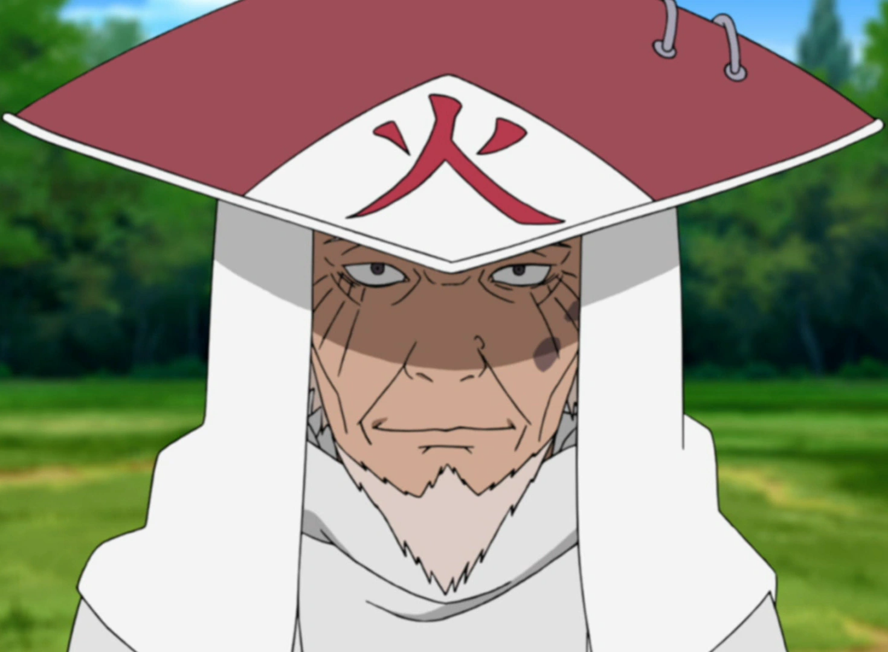
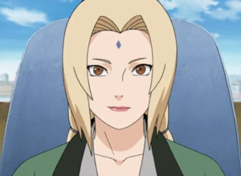

Parallex
Jump to endKonoha Kage's



Konohagakure (木ノ葉隠れの里, Konohagakure no Sato, English TV: "Village Hidden in the Leaves" or "Hidden Leaf Village", literally meaning: Village Hidden by Tree Leaves) is the hidden village of the Land of Fire . As the village of one of the Five Great Shinobi Countries , Konohagakure has a Kage as its leader known as the Hokage, of which there have been seven in its history. Konoha resides deep within a forest at the base of a mountain known as the Hokage Rock, which has the faces of all those who have taken the office of Hokage engraved on it.